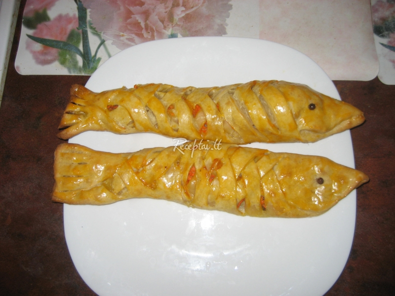

Mauris vitae nisl nec metus placerat perdiet est. Phasellus dapibus semper urna. Pellentesque ornare, orci in consectetuer hendrerit, volutpat.
Pellenteque ornare

Žuvis alaus tešloje - World Recipes Astrologinis simbolis vaizduoja dvi sujungtas žuvis. Žuvys gimsta paslaptinguoju metų laiku, kai mirtis užleidžia vietą gyvybei. Visą savo tolimesnį gyvenimą jos jaučia būties ribas, mistinio pasaulio alsavimą. Žuvims būdingas gilus užuojautos jausmas pirmiausia tiems, kas patenka į pavojingas situacijas.
Prekyba šaldyta ir šviežia žuvimi ... - UAB "Žuvis" Konservuota žuvis Vytinta žuvis Ikrai Griliaus žuvis ir gėrybės Gėrimai Aliejus, duona, druska, prieskoniai Jūrinis ešerys - karštai rūkytas (0,5 kg) 4,50 € 9,00 €/kg. vnt. Karpio gabaliukai - karštai rūkyti (0,7 kg) 7,35 € 10,50 €/kg ...
Prekyba šviežia ir rūkyta žuvimi - Šeimos Žuvis Žuvis be kaulų. Kitas svarbus dalykas, kuris dažnai mažuosius valgytojus baugina ir atbaido nuo žuvies- kaulai. Mažieji nenori, bijo valgyti žuvį, o tėvai gaišta savo laiką, kantriai išiminėdami iš žuvies net smulkiausias ašakas, kad vaikai nesibaimindami galėtų ją valgyti.
Žuvis: Žuvies filė - 1000receptų.lt UAB „Žuvis” perka - parduoda šviežias ir šaldytas žuvis, bei žuvies produktus ES ir kitose šalyse. Šis internetinis puslapis tai lengvas ir greitas kelias pirkėjui rasti, o pardavėjui parduoti žuvis, nesvarbu kurioje šalyje ar uoste būtų prekė.
Žuvies patiekalų receptai | Žuvies patiekalai | MAXIMA Kadangi žuvis skaniausia yra šviežia, prekiaujame žuvimi iš anksto, pagal užsakymus. Mūsų svetainėje užsisakę žuvies gausite ją visada žviežią ir ką tik išrūkytą ar paruoštą. Stengiamės pateikti tik geriausios kokybės produkciją.
Žuvis, jūros gėrybės | Užsakymas internetu Žuvis alaus tešloje - patiekalas, kurį nesunkiai pasigaminsite pagal šį receptą. Daug gerų, išbandytų receptų, kuriuos privalai išmėginti!
Produktai - Geros Žuvies Žuvis: Keptas ūsorius su grietinėlės - kaparėlių padažu Noriu pasigaminti Žuvies suvožtinis Noriu pasigaminti Žuvies kotletai pagal lenkus Noriu pasigaminti Kepta žuvis su avokadais, krevetėmis, grietinėle ir sūriu Noriu pasigaminti Reklama. Rūkytos skumbrės užtepas (užtepėlė)
Žuvis - visi receptai | Maistas | 15min.lt Šviežia žuvis Jūsų vaišių stalui. Kulinarų rekomenduojami, originalūs ir lengvai paruošiami žuvies patiekalų receptai, atitinkantys individualų skonį.
Žuvis | La Maistas Gardžiausi patiekalai iš: Žuvies filė. 1000receptu.lt - receptų portalas, kuris įkvepia gaminti!